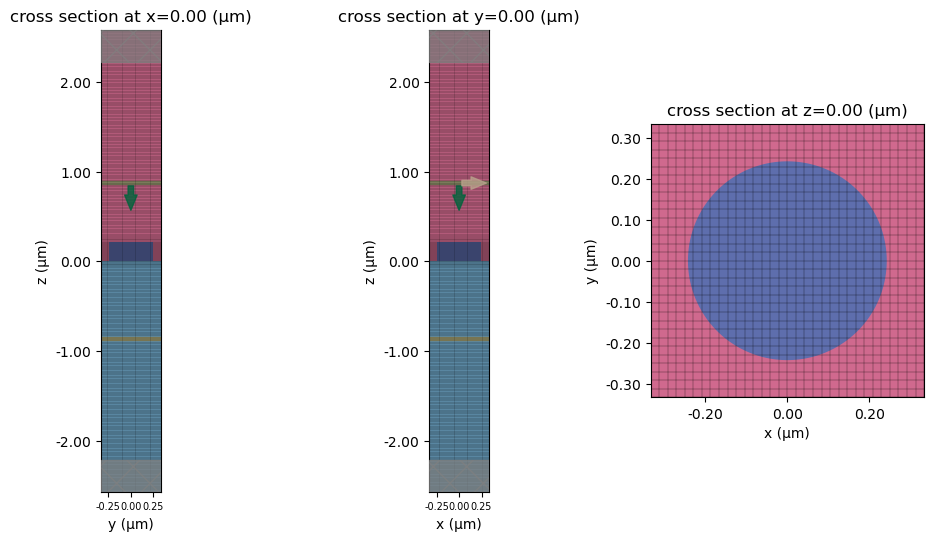
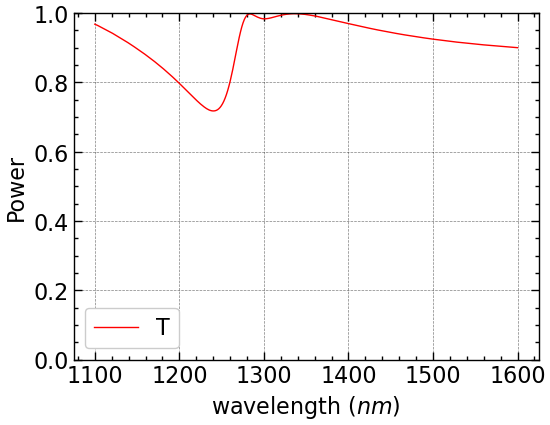
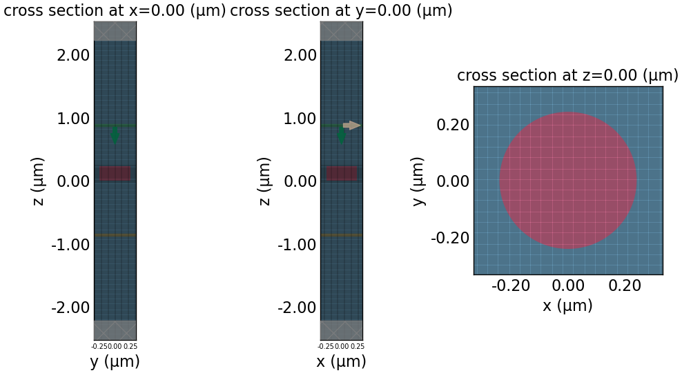
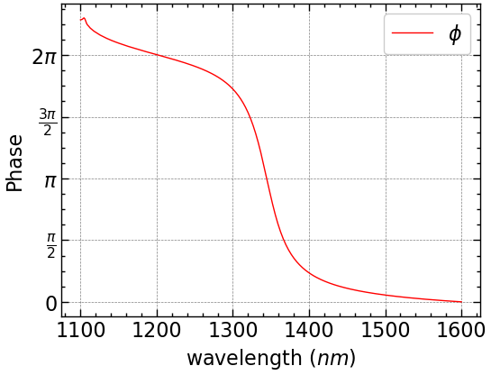

# Import the necessary packages
import matplotlib.pyplot as plt
import numpy as np
import tidy3d as td
import tidy3d.web as web
import scienceplots
# Set logging level to ERROR to reduce output verbosity
td.config.logging_level = "ERROR"Diffraction Monitor in Tidy3D
Yankun (Alex) Meng
Here I explored the use of Diffraction Monitor (Documentation) on Huygen’s Metasurface.
# 0 Define a FreqRange object with desired wavelengths
fr = td.FreqRange.from_wvl_interval(wvl_min=1.1, wvl_max=1.6)
N = 301 # num_points
freq0 = fr.freq0
lda0 = td.C_0 / fr.freq0# 1 Computational Domain Size
h = 0.220 # Height of cylinder
spc = 2
Lz = spc + h + h + spc
Px = Py = P = 0.666 # periodicity
sim_size = [Px, Py, Lz]# 2 Grid Resolution
dl = P / 128
horizontal_grid = td.UniformGrid(dl=dl)
vertical_grid = td.AutoGrid(min_steps_per_wvl=32)
grid_spec=td.GridSpec(
grid_x=horizontal_grid,
grid_y=horizontal_grid,
grid_z=vertical_grid,
)r = 0.242 # radius of the cylinder
n_Si = 3.5
Si = td.Medium(permittivity=n_Si**2, name='Si')
cylinder = td.Structure(
geometry=td.Cylinder(center=[0, 0, h / 2], radius=r, length=h, axis=2), medium=Si
)
# Background medium for the first simulation
n_glass = 1.4
n_SiO2 = 1.45
glass = td.Medium(permittivity=n_glass**2, name='glass')
SiO2 = td.Medium(permittivity=n_SiO2**2, name='oxide')
substrate = td.Structure(
geometry=td.Box(
center=(0,0,-Lz/2),
size=(td.inf,td.inf,2 * (spc+h))
),
medium=SiO2,
name='substrate'
)
glass = td.Structure(
geometry=td.Box(
center=(0,0,Lz/2),
size=(td.inf,td.inf,2 * (spc+h))
),
medium=glass,
name='superstrate'
)
# Background medium for the second simulation
# Polymer
n_polymer = 1.66
polymer = td.Structure(
geometry=td.Box(
center=(0,0,0),
size=(td.inf,td.inf,td.inf)
),
medium=td.Medium(permittivity=n_polymer**2, name='polymer'),
name='polymer'
)
source = td.PlaneWave(
source_time=fr.to_gaussian_pulse(),
size=(td.inf, td.inf, 0),
center=(0, 0, Lz/2 - spc + 0.5 * lda0),
direction="-",
pol_angle=0
)
monitor = td.DiffractionMonitor(
center=(0, 0, -Lz/2 + spc - 0.5 * lda0),
size=(td.inf,td.inf,0),
freqs=fr.freqs(N),
name='diffraction_monitor',
normal_dir='-', # away from structure
)
bandwidth = fr.fmax - fr.fmin
run_time = 200 / bandwidth
bc = td.BoundarySpec(
x=td.Boundary.periodic(),
y=td.Boundary.periodic(),
z=td.Boundary.pml()
)def simulation_helper(background, monitors, run_time):
"""
Create normalization and actual tidy3d simulations, visualize geometry,
and return both as a dictionary.
Parameters
----------
background : list of td.Structure
Background structures (without the cylinder).
monitors : list of td.Monitor
Monitors for the normalization run.
run_time : float
Run time for the normalization simulation.
Returns
-------
dict
{"norm": Simulation without cylinder,
"actual": Simulation with cylinder}
Notes
-----
Saves cross-sectional plots of the actual simulation (x=0, y=0, z=0)
with grid overlay for verification.
"""
sim_empty=td.Simulation(
size=sim_size,
grid_spec=grid_spec,
structures=background,
sources=[source],
monitors=monitors,
run_time=run_time,
boundary_spec=bc
)
background.append(cylinder)
sim_actual = td.Simulation(
size=sim_size,
grid_spec=grid_spec,
structures=background,
sources=[source],
monitors=monitors,
run_time=run_time,
boundary_spec=bc
)
# Always visualize simulation before running
fig, (ax1,ax2,ax3) = plt.subplots(1, 3, figsize=(12, 6))
ax1.tick_params(axis='x', labelsize=7)
ax2.tick_params(axis='x', labelsize=7)
sim_actual.plot(x=0, ax=ax1)
sim_actual.plot_grid(x=0, ax=ax1)
sim_actual.plot(y=0, ax=ax2)
sim_actual.plot_grid(y=0, ax=ax2)
sim_actual.plot(z=0, ax=ax3)
sim_actual.plot_grid(z=0, ax=ax3)
plt.savefig(f'huygens_structure_{background[0].name}.png', dpi=300)
plt.show()
sims = {
"norm": sim_empty,
"actual": sim_actual,
}
return sims
Simulation
sims = simulation_helper(
background=[substrate, glass],
monitors=[monitor],
run_time=run_time
)
batch = web.Batch(simulations=sims, verbose=True)
batch_data = batch.run(path_dir="data/huygens_diffraction")20:41:03 EDT Started working on Batch containing 2 tasks.
20:41:05 EDT Maximum FlexCredit cost: 0.050 for the whole batch.
Use 'Batch.real_cost()' to get the billed FlexCredit cost after the Batch has completed.
20:41:16 EDT Batch complete.
Diffraction Monitor Results
dD = batch_data["actual"]["diffraction_monitor"]
norm_data = batch_data["norm"]["diffraction_monitor"]
# diffraction_data.help()dD.monitorDiffractionMonitor(attrs={}, type='DiffractionMonitor', center=(0.0, 0.0, -0.8718518518518521), size=(inf, inf, 0.0), name='diffraction_monitor', interval_space=(1, 1, 1), colocate=False, freqs=(187370286250000.0, 187654180623106.06, 187938074996212.12, 188221969369318.2, 188505863742424.25, 188789758115530.3, 189073652488636.38, 189357546861742.44, 189641441234848.47, 189925335607954.53, 190209229981060.6, 190493124354166.66, 190777018727272.72, 191060913100378.78, 191344807473484.84, 191628701846590.9, 191912596219696.97, 192196490592803.03, 192480384965909.1, 192764279339015.16, 193048173712121.22, 193332068085227.28, 193615962458333.34, 193899856831439.38, 194183751204545.44, 194467645577651.5, 194751539950757.56, 195035434323863.62, 195319328696969.7, 195603223070075.75, 195887117443181.8, 196171011816287.88, 196454906189393.94, 196738800562500.0, 197022694935606.06, 197306589308712.12, 197590483681818.2, 197874378054924.25, 198158272428030.3, 198442166801136.34, 198726061174242.4, 199009955547348.47, 199293849920454.53, 199577744293560.6, 199861638666666.66, 200145533039772.72, 200429427412878.78, 200713321785984.84, 200997216159090.9, 201281110532196.97, 201565004905303.03, 201848899278409.1, 202132793651515.16, 202416688024621.2, 202700582397727.25, 202984476770833.3, 203268371143939.38, 203552265517045.44, 203836159890151.5, 204120054263257.56, 204403948636363.62, 204687843009469.7, 204971737382575.75, 205255631755681.8, 205539526128787.88, 205823420501893.94, 206107314875000.0, 206391209248106.06, 206675103621212.12, 206958997994318.16, 207242892367424.22, 207526786740530.28, 207810681113636.34, 208094575486742.4, 208378469859848.47, 208662364232954.53, 208946258606060.6, 209230152979166.66, 209514047352272.72, 209797941725378.78, 210081836098484.84, 210365730471590.9, 210649624844696.94, 210933519217803.0, 211217413590909.06, 211501307964015.12, 211785202337121.2, 212069096710227.25, 212352991083333.3, 212636885456439.38, 212920779829545.44, 213204674202651.5, 213488568575757.56, 213772462948863.62, 214056357321969.7, 214340251695075.75, 214624146068181.8, 214908040441287.88, 215191934814393.94, 215475829187499.97, 215759723560606.03, 216043617933712.1, 216327512306818.16, 216611406679924.22, 216895301053030.28, 217179195426136.34, 217463089799242.4, 217746984172348.47, 218030878545454.53, 218314772918560.6, 218598667291666.66, 218882561664772.72, 219166456037878.75, 219450350410984.8, 219734244784090.88, 220018139157196.94, 220302033530303.0, 220585927903409.06, 220869822276515.12, 221153716649621.2, 221437611022727.25, 221721505395833.3, 222005399768939.38, 222289294142045.44, 222573188515151.5, 222857082888257.56, 223140977261363.62, 223424871634469.7, 223708766007575.75, 223992660380681.8, 224276554753787.84, 224560449126893.9, 224844343499999.97, 225128237873106.03, 225412132246212.1, 225696026619318.16, 225979920992424.22, 226263815365530.28, 226547709738636.34, 226831604111742.4, 227115498484848.47, 227399392857954.53, 227683287231060.56, 227967181604166.62, 228251075977272.7, 228534970350378.75, 228818864723484.8, 229102759096590.88, 229386653469696.94, 229670547842803.0, 229954442215909.06, 230238336589015.12, 230522230962121.2, 230806125335227.25, 231090019708333.3, 231373914081439.38, 231657808454545.44, 231941702827651.5, 232225597200757.56, 232509491573863.62, 232793385946969.7, 233077280320075.72, 233361174693181.78, 233645069066287.84, 233928963439393.9, 234212857812499.97, 234496752185606.03, 234780646558712.1, 235064540931818.16, 235348435304924.22, 235632329678030.28, 235916224051136.34, 236200118424242.38, 236484012797348.44, 236767907170454.5, 237051801543560.56, 237335695916666.62, 237619590289772.7, 237903484662878.75, 238187379035984.8, 238471273409090.88, 238755167782196.94, 239039062155303.0, 239322956528409.06, 239606850901515.12, 239890745274621.2, 240174639647727.25, 240458534020833.3, 240742428393939.38, 241026322767045.44, 241310217140151.5, 241594111513257.53, 241878005886363.6, 242161900259469.66, 242445794632575.72, 242729689005681.78, 243013583378787.84, 243297477751893.9, 243581372124999.97, 243865266498106.03, 244149160871212.1, 244433055244318.16, 244716949617424.2, 245000843990530.25, 245284738363636.3, 245568632736742.38, 245852527109848.44, 246136421482954.5, 246420315856060.56, 246704210229166.62, 246988104602272.7, 247271998975378.75, 247555893348484.8, 247839787721590.88, 248123682094696.94, 248407576467803.0, 248691470840909.06, 248975365214015.12, 249259259587121.2, 249543153960227.25, 249827048333333.3, 250110942706439.34, 250394837079545.4, 250678731452651.47, 250962625825757.53, 251246520198863.6, 251530414571969.66, 251814308945075.72, 252098203318181.78, 252382097691287.84, 252665992064393.9, 252949886437499.97, 253233780810606.0, 253517675183712.06, 253801569556818.12, 254085463929924.2, 254369358303030.25, 254653252676136.3, 254937147049242.38, 255221041422348.44, 255504935795454.5, 255788830168560.56, 256072724541666.62, 256356618914772.7, 256640513287878.75, 256924407660984.8, 257208302034090.88, 257492196407196.94, 257776090780303.0, 258059985153409.06, 258343879526515.12, 258627773899621.2, 258911668272727.25, 259195562645833.28, 259479457018939.34, 259763351392045.4, 260047245765151.47, 260331140138257.53, 260615034511363.6, 260898928884469.66, 261182823257575.7, 261466717630681.75, 261750612003787.8, 262034506376893.88, 262318400749999.94, 262602295123106.0, 262886189496212.06, 263170083869318.12, 263453978242424.2, 263737872615530.25, 264021766988636.3, 264305661361742.38, 264589555734848.44, 264873450107954.5, 265157344481060.56, 265441238854166.62, 265725133227272.7, 266009027600378.75, 266292921973484.8, 266576816346590.88, 266860710719696.94, 267144605092803.0, 267428499465909.06, 267712393839015.1, 267996288212121.16, 268280182585227.22, 268564076958333.28, 268847971331439.34, 269131865704545.4, 269415760077651.47, 269699654450757.5, 269983548823863.56, 270267443196969.62, 270551337570075.7, 270835231943181.75, 271119126316287.8, 271403020689393.88, 271686915062499.94, 271970809435606.0, 272254703808712.06, 272538598181818.12), apodization=ApodizationSpec(attrs={}, start=None, end=None, width=None, type='ApodizationSpec'), normal_dir='-')dD.Er<xarray.DiffractionDataArray (orders_x: 1, orders_y: 1, f: 301)> Size: 5kB
array([[[-0.-0.j, -0.-0.j, -0.-0.j, -0.-0.j, -0.-0.j, -0.-0.j, -0.-0.j,
-0.-0.j, -0.-0.j, -0.-0.j, -0.-0.j, -0.-0.j, -0.-0.j, -0.-0.j,
-0.-0.j, -0.-0.j, -0.-0.j, -0.-0.j, -0.-0.j, -0.-0.j, -0.-0.j,
-0.-0.j, -0.-0.j, -0.-0.j, -0.-0.j, -0.-0.j, -0.-0.j, -0.-0.j,
-0.-0.j, -0.-0.j, -0.-0.j, -0.+0.j, -0.+0.j, -0.+0.j, -0.+0.j,
-0.+0.j, -0.+0.j, -0.+0.j, -0.+0.j, -0.+0.j, -0.+0.j, -0.+0.j,
-0.+0.j, -0.+0.j, -0.+0.j, -0.+0.j, -0.+0.j, -0.+0.j, -0.+0.j,
-0.+0.j, -0.+0.j, -0.+0.j, -0.+0.j, -0.+0.j, 0.+0.j, 0.+0.j,
0.+0.j, 0.+0.j, 0.+0.j, 0.+0.j, 0.+0.j, 0.+0.j, 0.+0.j,
0.+0.j, 0.+0.j, 0.+0.j, 0.+0.j, 0.+0.j, 0.+0.j, 0.+0.j,
0.+0.j, 0.+0.j, 0.+0.j, 0.+0.j, 0.+0.j, 0.+0.j, 0.+0.j,
0.+0.j, 0.+0.j, 0.+0.j, 0.+0.j, 0.+0.j, 0.+0.j, 0.+0.j,
0.+0.j, 0.+0.j, 0.+0.j, 0.+0.j, 0.+0.j, 0.+0.j, 0.+0.j,
0.+0.j, 0.+0.j, 0.+0.j, 0.+0.j, 0.+0.j, 0.+0.j, 0.+0.j,
0.+0.j, 0.+0.j, 0.+0.j, 0.+0.j, 0.+0.j, 0.+0.j, 0.+0.j,
0.+0.j, 0.+0.j, 0.+0.j, 0.+0.j, 0.+0.j, 0.+0.j, 0.+0.j,
0.+0.j, 0.+0.j, 0.+0.j, 0.+0.j, 0.+0.j, 0.+0.j, 0.+0.j,
0.+0.j, 0.+0.j, 0.+0.j, 0.+0.j, 0.-0.j, 0.-0.j, 0.-0.j,
0.-0.j, 0.-0.j, 0.-0.j, 0.-0.j, 0.-0.j, 0.-0.j, 0.-0.j,
0.-0.j, 0.-0.j, 0.-0.j, 0.-0.j, 0.-0.j, 0.-0.j, 0.-0.j,
...
-0.-0.j, -0.-0.j, -0.-0.j, -0.-0.j, -0.-0.j, -0.-0.j, -0.-0.j,
-0.-0.j, -0.-0.j, -0.-0.j, -0.-0.j, -0.-0.j, -0.-0.j, -0.-0.j,
-0.-0.j, -0.-0.j, -0.-0.j, -0.-0.j, -0.-0.j, -0.-0.j, -0.-0.j,
-0.-0.j, -0.-0.j, -0.-0.j, -0.-0.j, -0.-0.j, -0.-0.j, -0.-0.j,
-0.-0.j, -0.-0.j, -0.-0.j, -0.-0.j, -0.-0.j, -0.-0.j, -0.-0.j,
-0.-0.j, -0.-0.j, -0.-0.j, -0.-0.j, -0.-0.j, -0.-0.j, -0.-0.j,
-0.-0.j, -0.-0.j, -0.-0.j, -0.-0.j, -0.-0.j, -0.-0.j, -0.-0.j,
-0.-0.j, -0.-0.j, -0.-0.j, -0.-0.j, -0.-0.j, -0.-0.j, -0.+0.j,
-0.+0.j, -0.+0.j, -0.+0.j, -0.+0.j, -0.+0.j, -0.+0.j, -0.+0.j,
-0.+0.j, -0.+0.j, -0.+0.j, -0.+0.j, -0.+0.j, -0.+0.j, -0.+0.j,
-0.+0.j, -0.+0.j, -0.+0.j, -0.+0.j, -0.+0.j, -0.+0.j, -0.+0.j,
-0.+0.j, 0.+0.j, 0.+0.j, 0.+0.j, 0.+0.j, 0.+0.j, 0.+0.j,
0.+0.j, 0.+0.j, 0.+0.j, 0.+0.j, 0.+0.j, 0.+0.j, 0.+0.j,
0.+0.j, 0.+0.j, 0.+0.j, 0.+0.j, 0.+0.j, 0.+0.j, 0.+0.j,
0.+0.j, 0.+0.j, 0.+0.j, 0.+0.j, 0.+0.j, 0.+0.j, 0.+0.j,
0.+0.j, 0.+0.j, 0.+0.j, 0.+0.j, 0.+0.j, 0.+0.j, 0.+0.j,
0.+0.j, 0.+0.j, 0.+0.j, 0.+0.j, 0.+0.j, 0.+0.j, 0.+0.j,
0.+0.j, 0.+0.j, 0.+0.j, 0.+0.j, 0.+0.j, 0.+0.j, 0.+0.j,
0.+0.j, 0.+0.j, 0.+0.j, 0.+0.j, 0.+0.j, 0.+0.j, 0.+0.j,
0.+0.j, 0.+0.j, 0.+0.j, 0.+0.j, 0.+0.j, 0.+0.j, 0.+0.j]]])
Coordinates:
* orders_x (orders_x) int64 8B 0
* orders_y (orders_y) int64 8B 0
* f (f) float64 2kB 1.874e+14 1.877e+14 ... 2.723e+14 2.725e+14
Attributes:
long_name: diffraction amplitudeprint(dD.medium) oxidepower = np.array(dD.power[0][0])# plot transmission, compare to paper results, look similar
fig, ax = plt.subplots(1, 1, figsize=(6, 4.5))
plt.plot(td.C_0 / fr.freqs(N) * 1000, power / norm_power, "r", lw=1, label="T")
plt.xlabel(r"wavelength ($nm$)")
plt.ylabel("Power")
plt.ylim(0, 1)
plt.legend()
plt.savefig("power", dpi=300)
plt.show()
amps = np.array(dD.amps[0][0][:,0])
print(amps.shape)(301,)import pandas as pd
# this uses scienceplots to make plots look better
plt.style.use(['science', 'notebook', 'grid'])
print(pd.DataFrame(amps[0][0]).head()) 0 1
0 -7.477880e-09-8.372133e- 10j 0.400083+0.860127j
1 -7.466276e-09-2.064935e- 09j 0.385044+0.867238j
2 -7.082986e-09-3.138136e- 09j 0.369848+0.874091j
3 -6.485964e-09-3.902346e- 09j 0.354497+0.880677j
4 -5.897012e-09-4.333861e- 09j 0.339016+0.886985jPhase
phase = np.unwrap(np.angle(amps))new_amps = batch_data["actual"]["diffraction_monitor"].ampsmonitor = td.DiffractionMonitor(
center=(0, 0, -Lz/2 + spc - (td.C_0 / fr.freq0)),
size=(td.inf,td.inf,0),
freqs=fr.freqs(N),
name='diffraction_monitor',
normal_dir='-', # away from structure
)sims = simulation_helper(
background=[polymer],
monitors=[monitor],
run_time=700 / (fr.fmax - fr.fmin)
)
batch = web.Batch(simulations=sims, verbose=True)
batch_data = batch.run(path_dir="data/huygens_pol")22:17:43 EDT Started working on Batch containing 2 tasks.
22:17:45 EDT Maximum FlexCredit cost: 1.437 for the whole batch.
Use 'Batch.real_cost()' to get the billed FlexCredit cost after the Batch has completed.
22:18:45 EDT Batch complete.
first_order = batch_data["actual"]["diffraction_monitor"].amps[1][1]
norm_amps = batch_data["norm"]["diffraction_monitor"].amps[1][1]
phase_p2 = np.unwrap(np.angle(first_order[:, 1]))
phase_p2 = phase_p2 - phase_p2[0]
norm_phase_p2 = np.unwrap(np.angle(norm_amps[:, 1]))
norm_phase_p2 = norm_phase_p2 - norm_phase_p2[0]
phase = phase_p2 - norm_phase_p2fig, ax = plt.subplots(1, 1, figsize=(6, 4.5))
plt.plot(td.C_0 / fr.freqs(N) * 1000, phase, "r", lw=1, label="$\phi$")
plt.xlabel(r"wavelength ($nm$)")
plt.ylabel("Phase")
yticks = [0, np.pi/2, np.pi, 3*np.pi/2, 2*np.pi]
ytick_labels = [r"$0$", r"$\frac{\pi}{2}$", r"$\pi$",
r"$\frac{3\pi}{2}$", r"$2\pi$"]
ax.set_yticks(yticks)
ax.set_yticklabels(ytick_labels)
ax.legend()
plt.legend()
plt.savefig("phase.png", dpi=300)
plt.show()